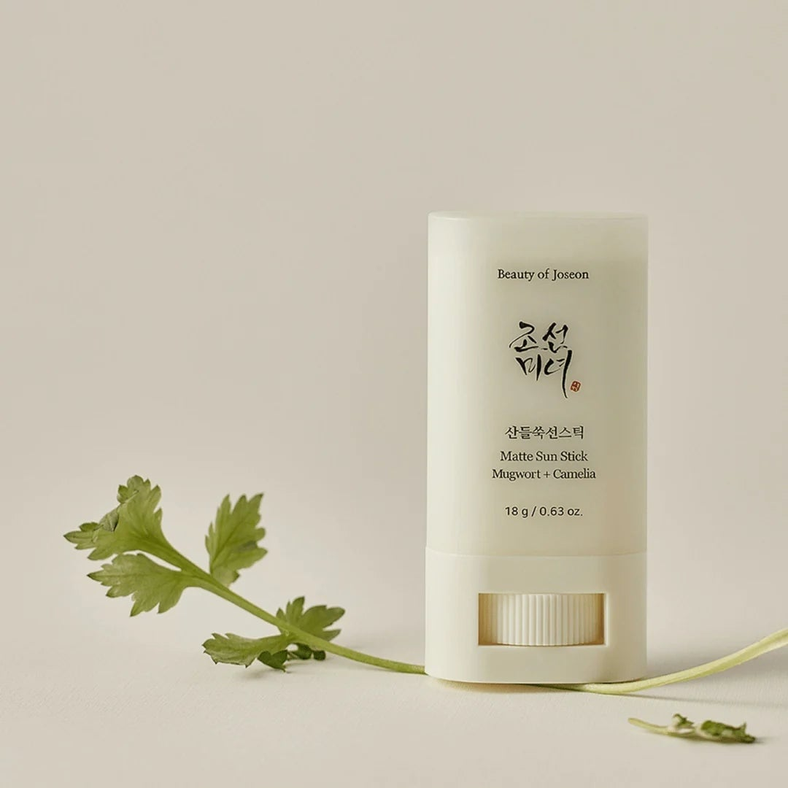
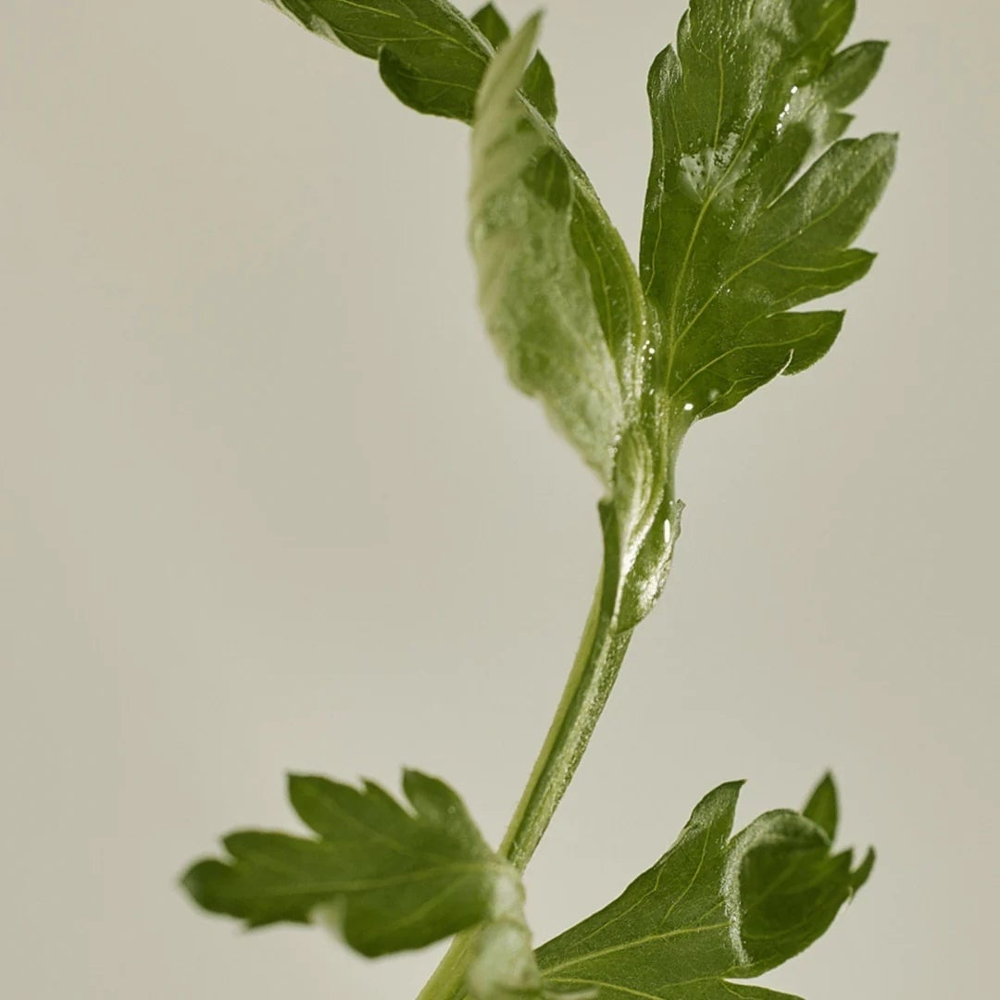
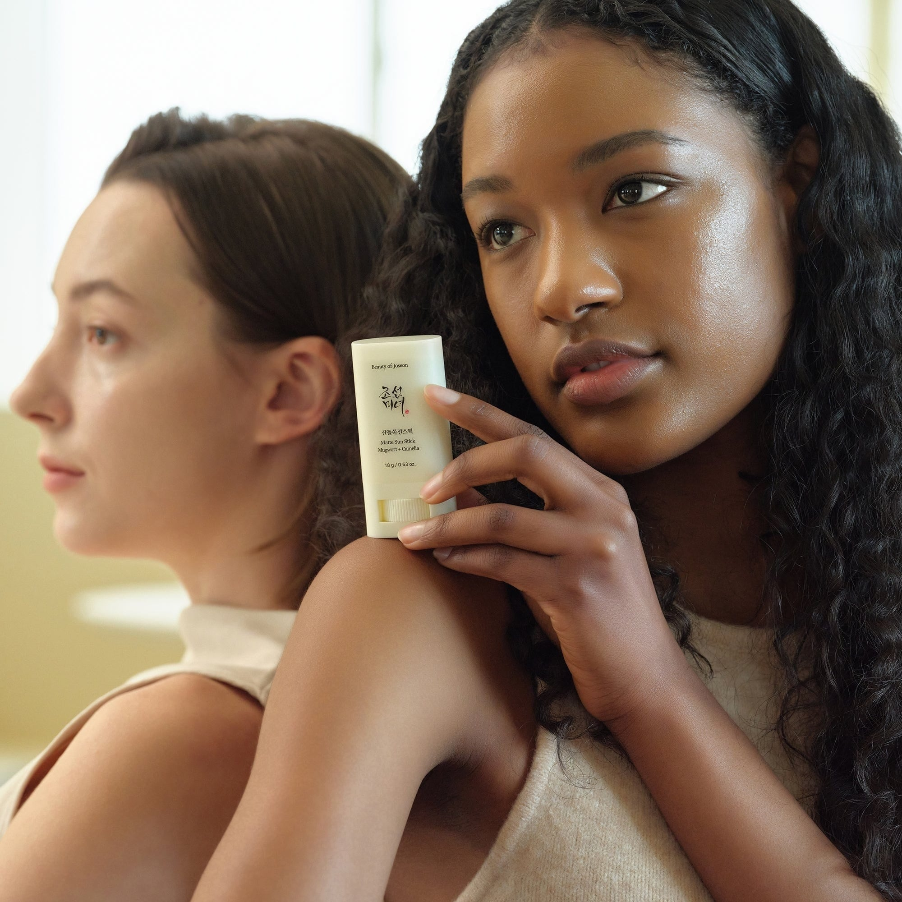
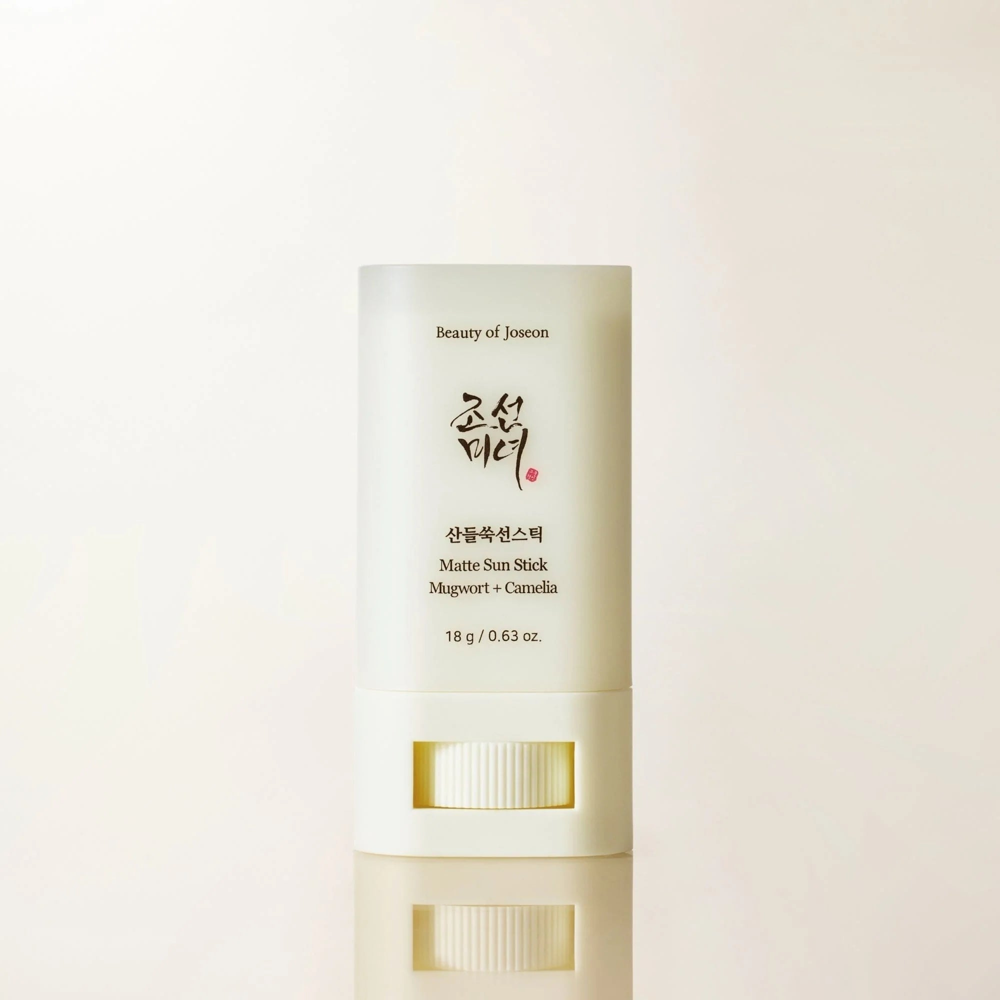
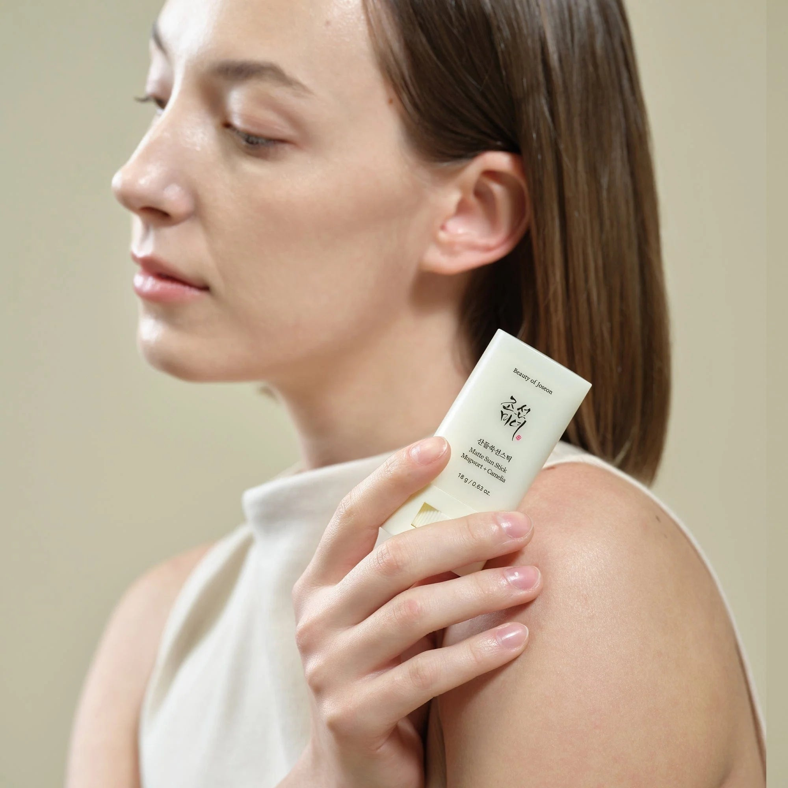
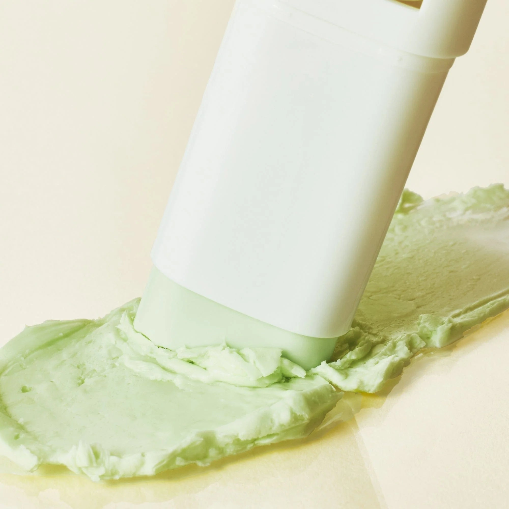

<div> <table style="border-collapse: collapse; width: 99.9251%;" border="1"><colgroup><col style="width: 50%;"><col style="width: 50%;"></colgroup> <tbody> <tr> <td> <div><span style="font-size: 14pt;"><strong>Beauty of Joseon Stick solar Matte Sun</strong></span></div> <div><span style="font-size: 14pt;"><strong>18g</strong></span></div> <div><span style="font-size: 14pt;">Protejeaza-ti pielea cu stick-ul solar Matte Sun Stick de la Beauty of Joseon. Formula compacta de 18g combina extractele naturale de Mugwort (pelin) si Camelia intr-un ambalaj minimalist si practic, ideal pentru o aplicare rapida, igienica si o reimprospatare facila a protectiei pe parcursul intregii zile.</span></div> </td> <td></td> </tr> <tr> <td></td> <td><span style="font-size: 14pt;">O imagine de detaliu ce subliniaza frunza verde de pelin (Mugwort), ingredientul de baza din acest stick solar matifiant. Textura sa este special conceputa pentru a calma si proteja pielea intr-un mod bland, reflectand perfect filosofia brandului de a folosi ingrediente traditionale din plante.</span></td> </tr> <tr> <td><span style="font-size: 14pt;">Confort si protectie invizibila pentru toate tipurile si tonurile de ten. Stick-ul solar cu pelin si camelia de la Beauty of Joseon ofera o aplicare usoara, lasand un finisaj neted, fara urme albe. Produsul este ideal pentru utilizarea zilnica, oferind o senzatie confortabila de prospetime.</span></td> <td></td> </tr> <tr> <td></td> <td><span style="font-size: 14pt;">Descopera eleganta simpla a stick-ului solar matifiant de la Beauty of Joseon, intr-un format de 18g cu mecanism rotativ facil. Designul modern si finisajul curat il fac un accesoriu de ingrijire indispensabil, gata sa iti ofere o aplicare uniforma si o protectie de incredere.</span></td> </tr> <tr> <td><span style="font-size: 14pt;">Stick-ul solar compact de la Beauty of Joseon aluneca fin pe piele, devenind un aliat de nadejde in ritualul tau zilnic de ingrijire. Dimensiunea sa redusa il face extrem de portabil, permitandu-ti sa mentii un aspect proaspat si ingrijit in orice moment, direct din miscare.</span></td> <td></td> </tr> <tr> <td></td> <td><span style="font-size: 14pt;">Textura solida, de un verde pal natural, se transforma intr-un strat fin si catifelat la contactul cu pielea. Acest stick cu pelin si camelia ofera un finisaj mat, non-gras, ideal pentru uniformizarea texturii tenului si reducerea excesului de luciu, fara a incarca porii.</span></td> </tr> </tbody> </table> </div>